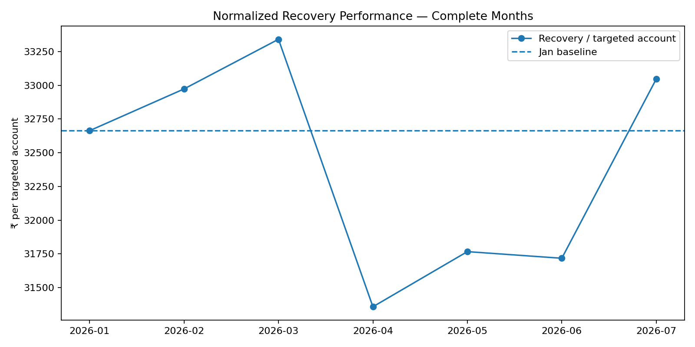
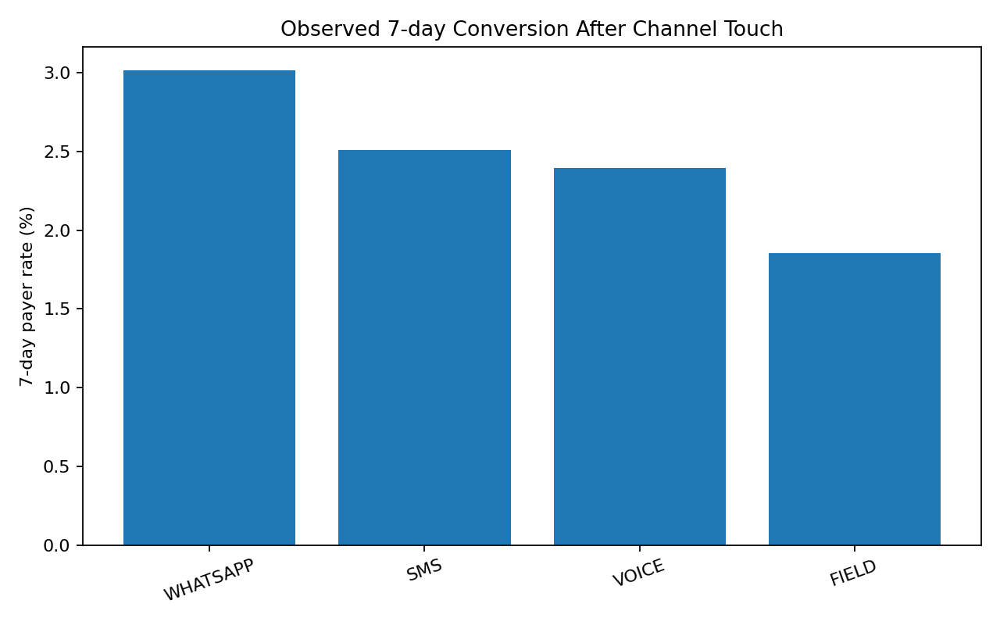

CredResolve Collections — Executive Dashboard
Independent analysis of supplied data; Jan–Jul 2026 are treated as complete months. August is partial.
₹18.72 Cr
July successful recovery
₹33,047
July recovery / targeted account
19.38%
July outbound answer rate
Verdict: The supplied data does not support a sustained 11% month-on-month recovery improvement. July vs June shows +6.65% in raw successful recovery, but only +4.19% recovery per targeted account; Jan-to-Jul recovery is essentially flat (0.01%).
Normalized trend

Observed channel conversion

Monthly scorecard
| Month | Recovery | ₹/target | Payer rate | Answer rate |
|---|
| 2026-01 | ₹18.72 Cr | ₹32,664 | 41.42% | 20.07% |
| 2026-02 | ₹17.01 Cr | ₹32,973 | 42.11% | 19.78% |
| 2026-03 | ₹18.89 Cr | ₹33,341 | 42.69% | 19.99% |
| 2026-04 | ₹17.51 Cr | ₹31,359 | 41.25% | 19.33% |
| 2026-05 | ₹18.43 Cr | ₹31,767 | 40.41% | 20.37% |
| 2026-06 | ₹17.56 Cr | ₹31,718 | 41.30% | 20.40% |
| 2026-07 | ₹18.72 Cr | ₹33,047 | 41.21% | 19.38% |
Channel association
| Channel | 7d payer | ₹/touched acct |
|---|
| WHATSAPP | 3.01% | ₹2,287 |
| SMS | 2.51% | ₹1,861 |
| VOICE | 2.40% | ₹1,849 |
| FIELD | 1.86% | ₹1,407 |
Association only; channel selection is not randomized, so this is not causal lift.
Investment recommendation
Recommendation: Better borrower targeting, but only as a staged experiment.
WhatsApp and voice touches show the strongest observed 7-day conversion, while 30–89 DPD accounts have better recovery per targeted account than 0-DPD accounts. However, the dataset has no reliable channel cost, incremental treatment/control assignment, or 12-month history. Therefore a full ₹10 Cr ROI/break-even case cannot be responsibly claimed from this data alone. Release budget in tranches against an A/B test with incremental recovery as the gate.
Major data-quality risks
- Payment exact duplicates inflate successful recovery by ₹25,901,962 (1.97%).
- 24,617 payment rows have borrower IDs inconsistent with the account master; account_id is used as the authoritative join key.
- 11,893 call records change calendar date after timezone normalization.
- 50.3% of status rows have recorded_at earlier than event_at, so ingestion order cannot define business chronology.
- Language and client are absent from the supplied schema; those drivers cannot be tested.